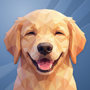
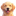
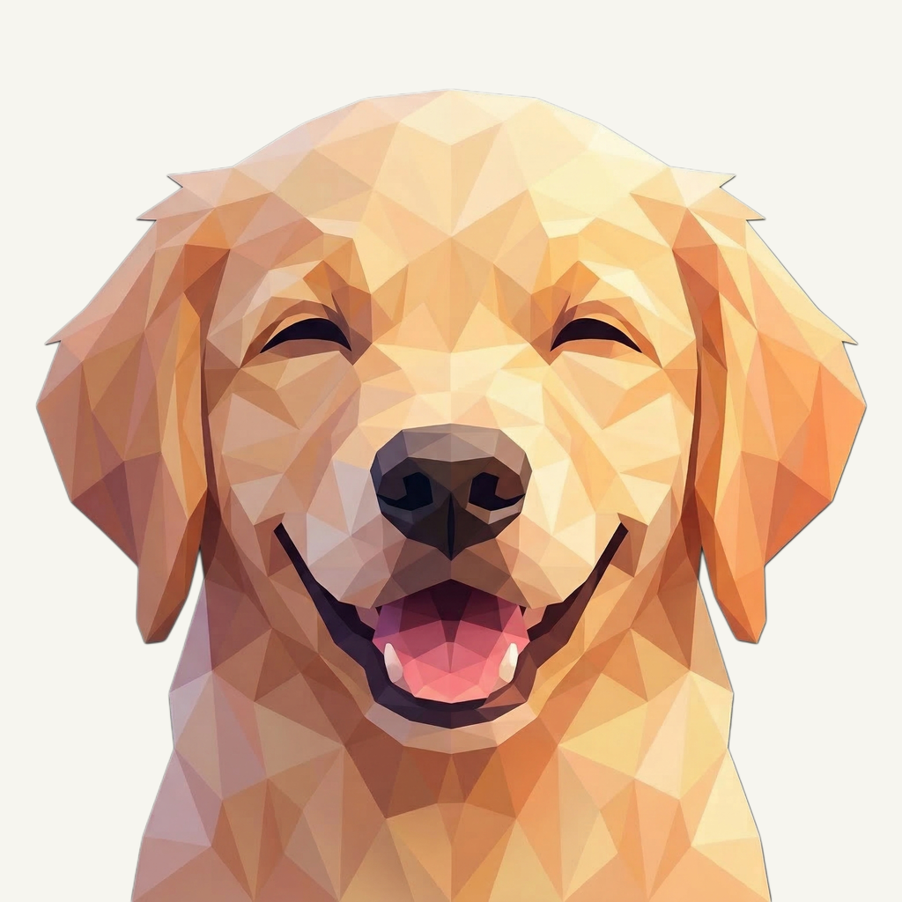
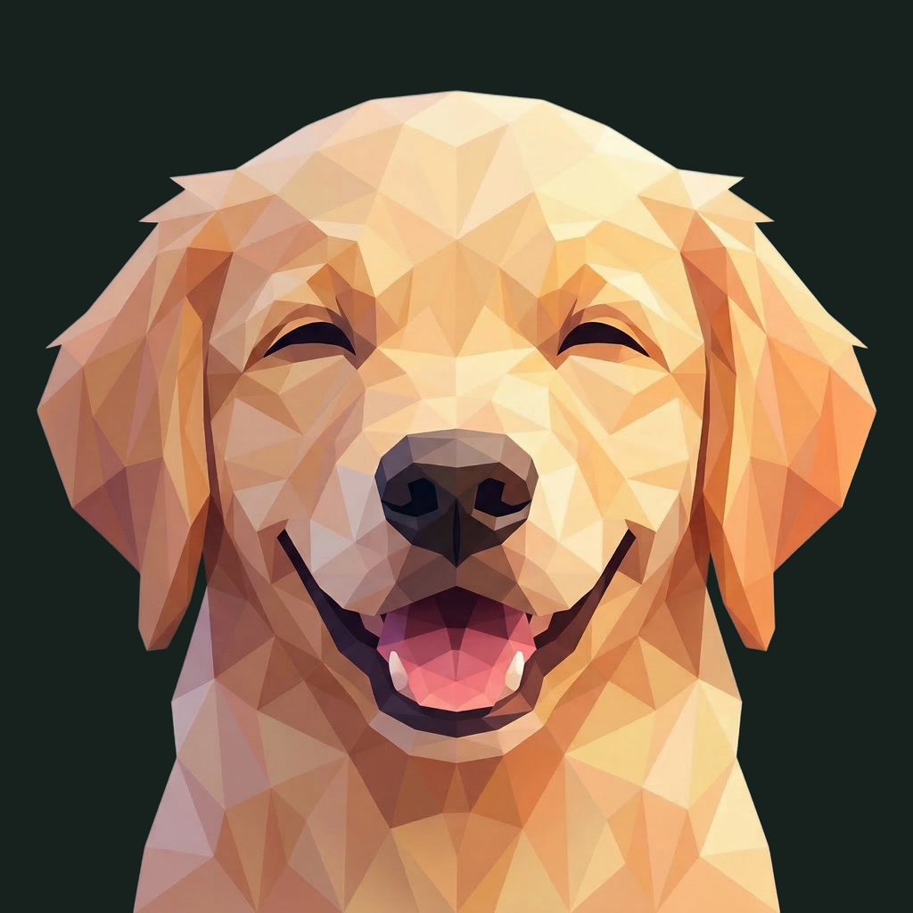

01 / Composition
Keep the relaxed smile
The original face, ears, smile, tongue, and lower-frame entry stay unchanged. No elongated-neck candidate or new paw is substituted for the owner-retained portrait.
Animal family · Refined presentation
The familiar golden smile, lit by broad folds in a blue paper field.
Original artwork retained · finishing 01
Native 2048 × 2048
01 / Composition
The original face, ears, smile, tongue, and lower-frame entry stay unchanged. No elongated-neck candidate or new paw is substituted for the owner-retained portrait.
02 / Drawing
Golden and cream planes carry the dog, with its existing rose tongue and dark nose. The original transparency, color, anatomy, and framing are copied byte-for-byte.
03 / Presentation
Unequal oblique paper planes cross the blue negative space. The cooler setting separates the golden face, while fine grain and a shallow shadow keep the family material consistent.
Presentation tiles at 128/64 px; transparent artwork for small app and browser marks.


The golden ears, dark nose, and open smile remain clear at 32 px. Finer coat planes simplify at 16 px. Sidebar and browser marks stay transparent; touch and install icons use platform-specific presentations.
A designed background, with colors sampled from the untouched original.
Select a swatch to copy its hex value. The Neo UI primary (#3C83F6) remains a separate product color.
One retained foreground, checked on two contrasting backgrounds.


Original artwork retained · zero generation calls · native 2048 × 2048
Loading brief…
The original animal was retained without a model request. These owner-provided boards guide the independently composed matte field, light, and shallow surface texture.


{kind=link}
{kind=link}
{kind=link}
{kind=link}
{kind=link}